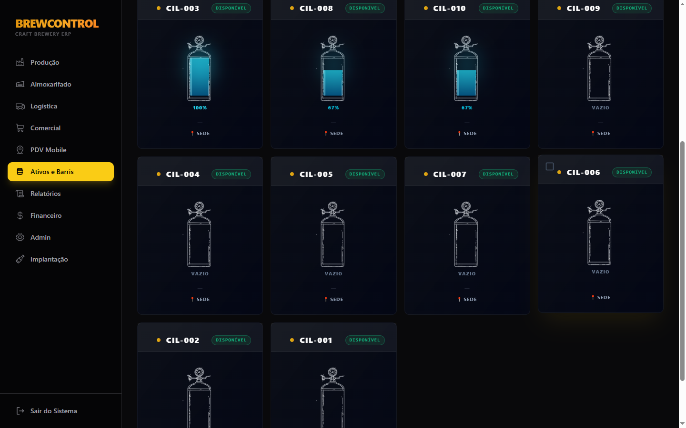

Por dentro do BrewControl: um tour pelos módulos (com prints reais do sistema)
Em vez de só descrever recursos, resolvemos mostrar a tela mesmo. Um passeio rápido por cada módulo do BrewControl, do jeito que ele aparece pra quem usa todo dia.
Produção
Do planejamento do lote ao dia da brassagem: perfis de mostura, fermentação e receita ficam salvos e reutilizáveis. Cada evento do lote (mostura, fervura, transferência pra fermentador, medição de densidade) é registrado no histórico — nada é editado depois, só corrigido com um novo evento.

Almoxarifado
Saldo de insumos calculado automaticamente pelas movimentações — nada de célula que alguém esquece de atualizar. O consumo de malte, lúpulo e levedura é lançado sozinho assim que a brassagem acontece.

Comercial
Pedido não baixa estoque na hora — ele reserva. O estoque só muda de verdade quando a entrega é confirmada na Logística. Isso evita o clássico problema de vender o mesmo barril duas vezes.

Logística
A execução da entrega é o único momento em que o estoque realmente muda de mão. O vínculo físico entre barril e cliente (quem está "em campo" com o quê) nasce aqui, não no pedido.

Ativos (barris, chopeiras e cilindros)
Cada barril, chopeira e cilindro de CO₂ é um ativo com identidade e histórico próprios — não uma linha genérica de estoque. Dá pra saber, a qualquer momento, onde cada um está e em que status.


Financeiro
Contas a pagar e a receber, DRE gerencial e fluxo de caixa — alimentados pelas operações do dia a dia, não digitados duas vezes. Entrega confirmada gera conta a receber automaticamente; o recebimento em si é sempre confirmado manualmente, pra bater com o extrato real.

Fiscal
Assistente de emissão de NFC-e/NF-e integrado — configure uma vez (certificado, token, códigos fiscais) e a nota pode sair automaticamente ao fechar a venda, sem digitar tudo de novo num emissor separado.

Brewpub (bar próprio)
Pra quem também vende no próprio bar: comandas, mesas, cardápio e caixa do dia — com o barril conectado direto na torneira e a baixa de estoque automática a cada chope servido.

Esse é o sistema real, rodando hoje em produção — não uma maquete. Se quiser ver funcionando com os dados da sua própria cervejaria, a próxima seção é o convite certo.
Quer testar sem pagar nada?
Abrimos 5 vagas no Programa Cervejaria Fundadora: acesso completo ao BrewControl por 6 meses, de graça — você paga só o que é de terceiro (IA e emissão de nota fiscal).
Quero ser cervejaria fundadora →